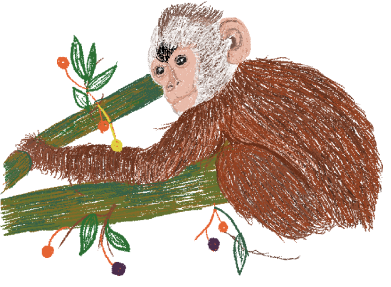
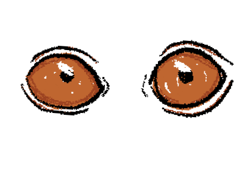

Nuestra misión
Contribuir a la conservación de los primates Colombianos mediante el apoyo a la
investigación básica y
aplicada en primatología.
Promover el establecimiento de una legislación que favorezca la conservación de los ecosistemas y la gestión
de recursos orientados al desarrollo de los objetivos de la Asociación.


Nuestra visión
Consolidarnos como una institución de referencia para la primatología a nivel nacional e internacional, y un
ente consultor de las autoridades ambientales para definir las políticas tendientes a la conservación de las
especies de primates nativas.